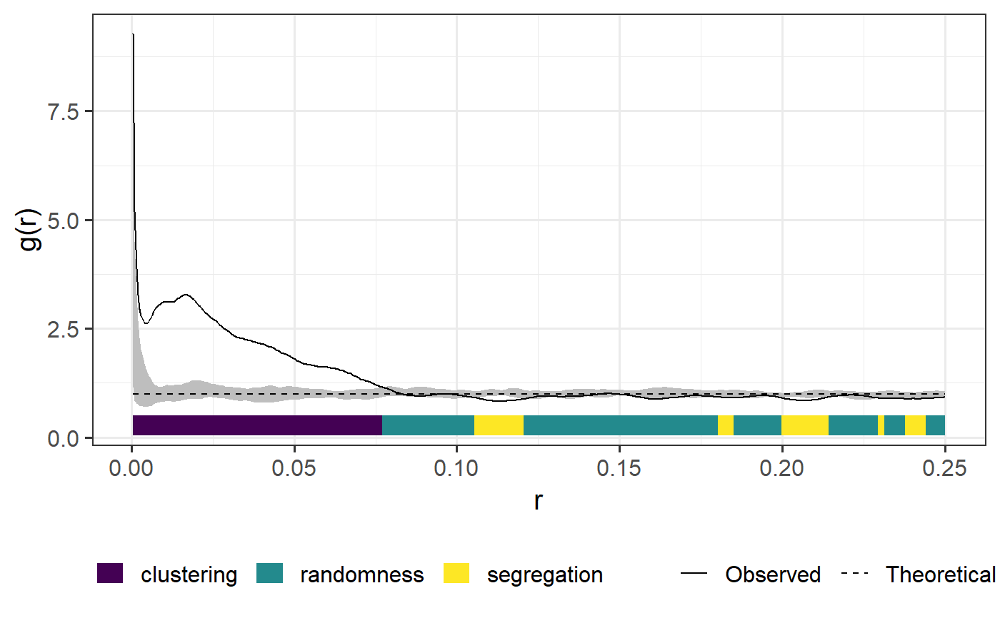

plot_quantums.RdPlot simulation envelopes
plot_quantums(input, labels = NULL, color_scale = NULL, legend_position = "bottom", quantum_position = 0.05, title = NULL, xlab = NULL, ylab = NULL, size = 5, full_fun = TRUE, quantum = TRUE, standarized = FALSE)
| input | envelope. |
|---|---|
| labels | Name of the labels. See details for more information. |
| color_scale | Colors used with labels. |
| legend_position | The position of legends ("none", "left", "right", "bottom", "top", or two-element numeric vector) |
| quantum_position | Position of the quantum relative to the simulation envelopes. |
| title | Plot title. |
| xlab, ylab | axis labels. |
| size | Size of the colour bar. |
| full_fun | If true observed value and envelope is plotted. |
| quantum | If true quantums bars are plotted. |
| standarized | If true observed value is standardized. See details for more details. |
This functions provides a plotting style for envelope objects of the spatstat
package (for more information please see spatstat::envelope). The location of the
observed value in relation to the simulation envelope of the null model input is
indicated by an additional colour bar at the bottom of the plot. If standarized = TRUE,
all values are standarized by subtracting the theoretical value for CSR
Labels must be a vector including labels for the following three cases. The color scale vector is used in the same order.
1 = observed > high
2 = low < observed < high
3 = observed < low
To adjust the position of the quantum bar, use quantum_position. Larger values increase
the distance from the lower part of the envelope. quantum_position = 0 puts the quantum
bar on the minium value of the simulation envelope, negative value shift above that value.
Esser, D. S. et al. 2015. Spatial scales of interactions among bacteria and between bacteria and the leaf surface. - FEMS Microbiol. Ecol. 91: fiu034.
envelope
set.seed(42) pattern <- spatstat::rThomas(kappa = 50, scale = 0.025, mu = 5) csr_envelope <- spatstat::envelope(pattern, fun = spatstat::pcf, nsim = 19)#> Generating 19 simulations of CSR ... #> 1, 2, 3, 4, 5, 6, 7, 8, 9, 10, 11, 12, 13, 14, 15, 16, 17, 18, 19. #> #> Done.plot_quantums(csr_envelope, ylab = "g(r)")